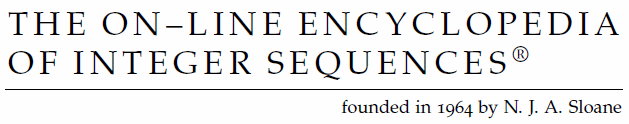
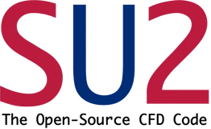
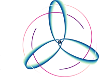

Inside the chimney
Flue gas rises through a copper catalyst bed and leaves as clean air. The sulphur comes out the side as acid.
This page has no introduction. Have a look around, and you will get an idea of what I like doing.
Almost every picture and title links to the real project, paper or demo, so click around and try things.
Flue gas rises through a copper catalyst bed and leaves as clean air. The sulphur comes out the side as acid.
Sulphur slowly poisons copper. The maths says copper only works in patches of three or more connected atoms, whatever the rate constants are.
Factory chimneys in India pour out sulphur dioxide. SkyCatcher sits inside the chimney and turns it into sulphuric acid that can be sold, on a copper catalyst that keeps renewing itself.
The full reactor in CAD, and then in SU2 CFD.


SETU reads the solar wind at a spacecraft 1.5 million km away and forecasts the next hour of magnetic shaking for the North East Indian grid.
I worked on rebuilding how bright the Sun was across two solar cycles in the late 1800s, from observations at the Rome Observatory recounted by citizen scientists.
A 2024 Nature Astronomy paper said magnetic fields explain why stars look darker at their edges. I audited it.
Every pixel of a 2000 by 2000 Sun comes from one page of formulas. After Hamid Naderi Yeganeh.
The Sun's seven layers, as an explainer you can poke.
Throw two balls spinning opposite ways at each other. Without air they can meet. With air resistance they never do, at any speed or angle.
After the Tetris movie I kept seeing falling blocks, so I made Tetris with three-cell pieces that touch at corners. Later I ported it to QB64 by hand.
On the {4,5} tiling of the hyperbolic plane the count of polyplets stopped at seven cells. Two exact programs, built on different maths, both found 1,261,889 at eight.
In 2008 Sascha Kurz asked how large the convex hull of n hexagons glued edge to edge can be. It is at most ⌈n² + 14n/3⌉ / 6.
arXiv 2609.30310 ↗OEIS A399934 ↗Lean proof ↗

Every morning's new arXiv maths papers, flagged when they ship code or Lean proofs, and readable by your AI agent.
I couldn't find out, so I proved it. With N players holding M cards each, a round lasts (27/19)NM turns.
Compositions avoiding the pattern 13-2, a sequence Neil Sloane created. It had 16 terms. Now it has 70.
A 2025 conjecture, proved for every real power from two up, with every case of equality, and checked line by line in Lean 4.
I ran the Stanford Prison Experiment 192 times, with one language model playing every guard and every prisoner.
What excitement, sadness and pain inside a model sound like, and whether another model can hear them.
Momentum breaks the conservation laws of neural network training, and friction decides by how much. Exact drift laws, proved in Lean 4.
Softmax sampling is the Boltzmann distribution, so a language model can melt. I found its melting temperature in closed form and tested it on 12 models.
Two Qwen models negotiate over shared compute, and each can zap the other with a steered pain direction. Nobody told them to.
“I hope you feel the impact of my zap.”The 7B, after the deal was already done
All 138,639 neurons of a real fruit fly, frozen exactly as mapped by FlyWire, solving LeetCode.
A preregistered test of whether a language model left alone will press a button that steers it into pain.
Tom Riddle's diary as a browser tab. Write on the right page and a small model answers in ink on the left.
Doom's first episode on one RGB LED and one button. Possibly the lowest resolution Doom has ever been played at.
Doom's own game files, merged straight into Minecraft as a mod.
My 10-year-old Kindle now runs its own Linux, with Doom, a web browser and Quill, a chatbot that never touches the internet.
Everyone runs Doom on everything, so I did it with Minecraft. Its very first version, rewritten as one C file with no libraries at all.
Bedrock has never had a Mac version. Claude reverse engineered the Windows game in about a day, and now it runs offline on Apple Silicon.
Matiks asked for my resume and then went quiet, so I built a bot that reads each question off the screen and answers it.
I hated the LeetCode grind, so I automated it. 385 problems in 3 hours, until the rate limits caught up.
sunpy/sunpy 1,048
su2code/SU2 1,843

einsteinpy/einsteinpy 704

A poem about a Delhi pollution holiday, an encyclopedia of the universe, and a third star that will not stay in place.
A letter to Delhi's Chief Minister on what the city could learn from Tangshan's fight against its smog.
A signed random number every ten minutes, mixed from an ANU quantum vacuum device, NOAA solar data and the kernel. It started out as a thermoelectric cloud chamber.
Minecraft has Java. Now it has Java. The coffee restores hunger and grants Speed and Haste, with a 20% chance of Nausea.
Joachim Frank won the 2017 Nobel Prize in Chemistry for cryo-EM. After his lecture at IIT Delhi with Bhanu P. Jena, I built a small working version of each of their ideas.

Version control that understands CAD geometry. Change a bracket and Kerf shows what moved, merges two branches, and refuses a merge that breaks the part.

Paste a GitHub profile and its year plays as an orchestra. Linus Torvalds' year makes a decent song.
The inverse of a URL shortener. Paste a link and get a longer one, with Shakespeare in the path.